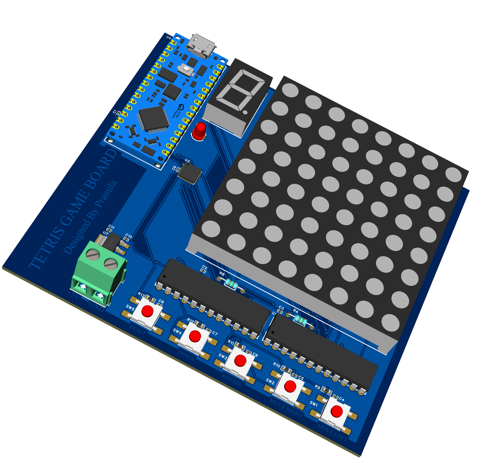

Project 1: Line Following Robot
This project presents a line following robot developed as a first-semester engineering project, designed to accurately navigate predefined paths. The robot follows a line using a 5 Channel Line Tracking Sensor Module (BFD-1000) and performs precise directional changes including 90° turns, 45° turns, and smooth round turns while maintaining stable alignment with the path. It is also capable of grid-based navigation where the robot follows a specific path provided by the instructor.
The system is controlled by an Arduino Uno programmed in C++, which processes sensor inputs and controls the motors through an L298N motor driver, demonstrating the integration of sensors, motor control, and embedded programming to achieve accurate and reliable autonomous line tracking.

Project 1:AVR-Based Tetris Game with UART Communication
Developed an AVR-based Tetris game system using Embedded C in Microchip AVR Studio, implemented on a custom-designed PCB and tested through Proteus simulation before hardware testing. The system handles GPIO to interface push buttons for player controls and to drive the LED matrix used to display the tetromino shapes. Timers and interrupts were implemented to control the automatic falling speed of the blocks and to detect button inputs for responsive gameplay. UART communication was used between two microcontrollers, where the main MCU sends the character 'T' to request a random number from a second MCU that acts as a random number generator for selecting tetromino pieces. The game logic allows Tetrimino blocks to descend from the top of the playing field, where the player can move pieces or rotate them until they reach the bottom or stack on previously placed blocks. When a horizontal line is completed, it clears and the blocks above fall, displaying on the 8*8 matrix while the 7-segment display shows its score.